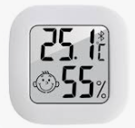
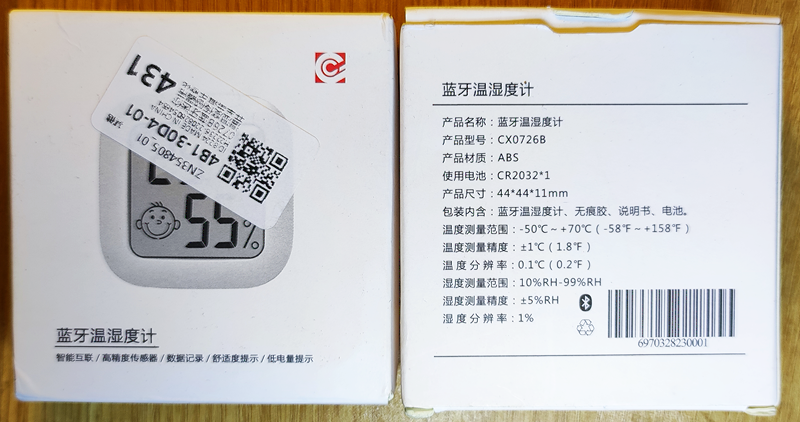
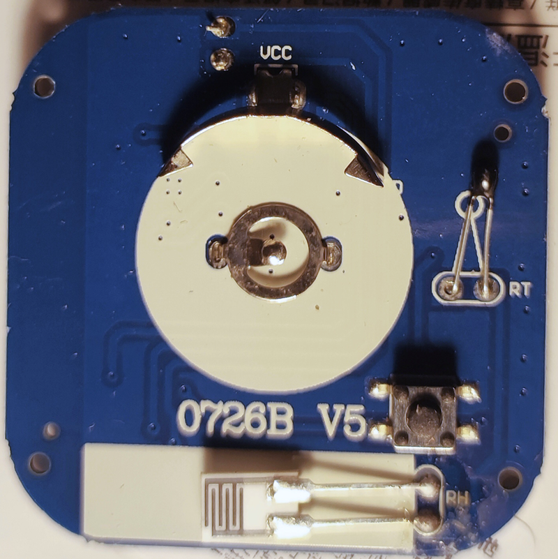

CX0726B, BLE Name: LT_96F2

SoC: OM6621DB, Q: 32MHz, Diver LCD: ?, Sensor: low cost R&H analog sensors!
Manufacturer: Beijing OnMicro Electronics Co.,Ltd.



It has CR2032, but the average current in ad mode is 80 uA. And when connected to a regular Chinese program, the average current is 0.8 mA. Ten days of battery life.
Not recommended for use!
Temperature and humidity transfers only when connected.
Température Bluetooth LE dans domoticz par reverse engineering et MQTT auto-discovery Home Assistant